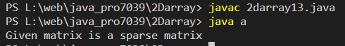

Program to determine whether a given matrix is a sparse matrix
Code:-
class a
{
public static void main(String[] args) {
int rows, cols, size, count = 0;
//Initialize matrix a
int a[][] = {
{4, 0, 0},
{0, 5, 0},
{0, 0, 6}
};
//Calculates number of rows and columns present in given matrix
rows = a.length;
cols = a[0].length;
//Calculates the size of array
size = rows * cols;
//Count all zero element present in matrix
for(int i = 0; i < rows; i++){
for(int j = 0; j < cols; j++){
if(a[i][j] == 0)
count++;
}
}
if(count > (size/2))
System.out.println("Given matrix is a sparse matrix");
else
System.out.println("Given matrix is not a sparse matrix");
}
}
Output:-
